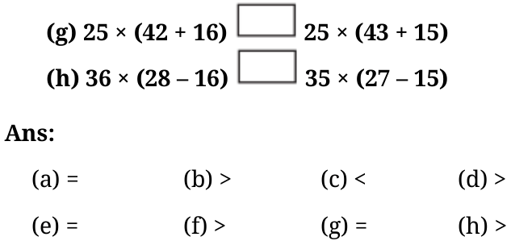

Ans: For I: Way1:
\((5 \times 4) + (4 \times 8) = 52\)
Way 2:
\(2 \times (4 + 8 + 4) + (8 + 4 + 8) = 52\)
For II: Way 1:
\((8 \times 5) + (8 \times 6) = 88\)
Way 2:
\(8 \times (5 + 6) = 88\)
Find more ways.
- Read the situations given below. Write appropriate expressions for each of them and find their values.
- The district market in Begur operates on all seven days of the week. Rahim supplies 9 kg of mangoes each day from his orchard, and Shyam supplies 11 kg of mangoes each day from his orchard to this market. Find the number of mangoes supplied by them in a week to the local district market.
- Binu earns ₹ 20,000 per month. She spends ₹ 5,000 on rent, ₹ 5,000 on food, and ₹ 2,000 on other expenses every month. What is the amount Binu will save by the end of the year?
- During the daytime, a snail climbs 3 cm up a post, and during the night, while asleep, accidentally slips down by 2 cm. The post is 10 cm high, and a delicious treat is on top. In how many days will the snail get the treat?
Ans:
- Expression: \(7 \times (9 + 11)\) kg Value: 140 kg
- Expression: \(12 \times 20,000 - 12 \times (5000 + 5000 + 2000)\) Amount Binu will save by the end of the year = ₹96,000
- In the daytime the snail climbs 3 cm up the post and slips down by 2 cm at night. So, the distance climbed by the snail on the post in full day cycle
\(= 3 - 2 = 1\) cm
\(\therefore\) The distance climbed by the snail in 7 days \(= 7\) cm The height of the post is 10 cm. On the 8th day the snail will climb i.e. \(7 \times (3 - 2) + 3 \times 1 = 10\) cm
- Melvin reads a two - page story every day except on Tuesdays and Saturdays. How many stories would he complete reading in 8 weeks? Which of the expressions below describes this scenario?
- \(5 \times 2 \times 8\)
- \((7 - 2) \times 8\)
- \(8 \times 7\)
- \(7 \times 2 \times 8\)
- \(7 \times 5 - 2\)
- \((7 + 2) \times 8\)
- \(7 \times 8 - 2 \times 8\)
- \((7 - 5) \times 8\) Ans: Expressions describing the scenario (total stories) = (b) and (g).
- Find different ways of evaluating the following expressions:
- \(1 - 2 + 3 - 4 + 5 - 6 + 7 - 8 + 9 - 10\)
- \(1 - 1 + 1 - 1 + 1 - 1 + 1 - 1 + 1 - 1\) Ans:
- Way 1 : \(1 - 2 + 3 - 4 + 5 - 6 + 7 - 8 + 9 - 10\)
\(= (1 + 3 + 5 + 7 + 9) +\) \(- 2 - 4 - 6 - 8 - 10)\)
Way 2: \(1 - 2 + 3 - 4 + 5 - 6 + 7 - 8 + 9 - 10 = (1 - 2) + (3 - 4) + (5 - 6) + (7 - 8) +(9 - 10)\)
Try more ways.
- Way 1: \(1 - 1 + 1 - 1 + 1 - 1 + 1 - 1 + 1 - 1\)
\(= (1 - 1) + (1 - 1) + (1 - 1) + (1 - 1) + (1 - 1)\)
Way 2: \(1 - 1 + 1 - 1 + 1 - 1 + 1 - 1 + 1 - 1 = (1 + 1 + 1 + 1 + 1) +\) \(- 1 - 1 - 1 - 1 - 1)\)
Try more ways.
- Compare the following pairs of expressions using ‘<’, ‘>’, or ‘=,’ or by reasoning.
- \(49 - 7 + 8 49 - 7 + 8\)
- \(83 \times 42 - 18 83 \times 40 - 18\)
- \(145 - 17 \times 8 145 - 17 \times 6\)
- \(23 \times 48 - 35 23 \times (48 - 35)\)
- \((16 - 11) \times 12 - 11 \times 12 + 16 \times 12\)
- \((76 - 53) \times 88 88 \times (53 - 76)\)
- Identify which of the following expressions are equal to the given expression without computation. You may rewrite the expressions using terms or removing brackets. There can be more than one expression that is equal to the given expression.
- \(83 - 37 - 12\)
- \(84 - 38 - 12\)
- \(84 - (37 + 12)\)
- \(83 - 38 - 13\)
- \(- 37 + 83 - 12\)
- \(93 + 37 \times 44 + 76\)
- \(37 + 93 \times 44 + 76\)
- \(93 + 37 \times 76 + 44\)
- \((93 + 37) \times (44 + 76)\)
- \(37 \times 44 + 93 + 76\) Ans:
- (i) and (iv)
- (iv)
- Choose a number and create ten different expressions having that value.
Ans: Let’s choose the number 26. Here are ten different expressions with
the value 26:
- \(10 + 16\)
- \(30 - 4\)
- \(13 \times 2\)
- \(\frac{52}{2}\)
- \(5 + (3 \times 7)\)
- \((5 \times 5) + 1\) Try for some other numbers.
